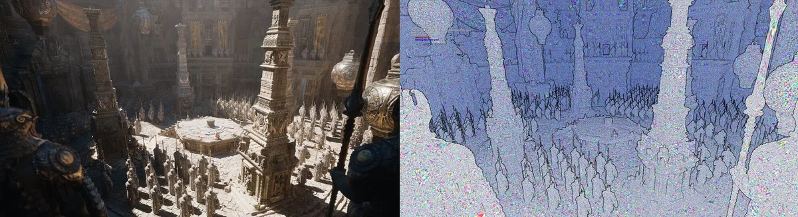
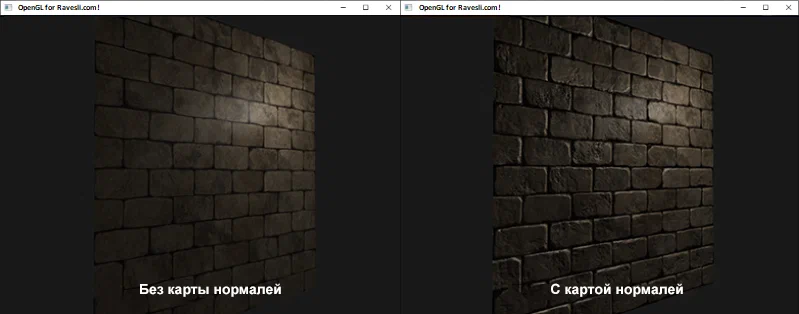
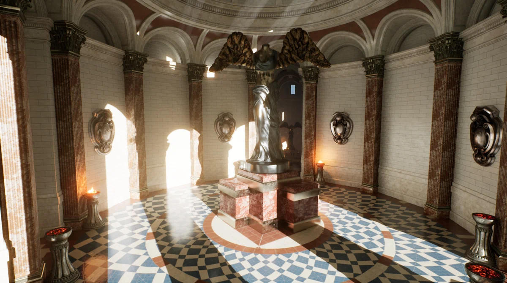

Что такое игровой движок?
Если простым языком, это набор инструментов для создания игровых миров.
Причем самых разных. Например, для вашей игры требуется реалистичное освещение
как в Red Dead Redemption 2, или разрушаемость объектов как в Battlefield.
Все эти возможности предоставляет движок.
Первая презентация
Чем же уникальна именно 5 версия? 14 мая 2020 года, разработчики представили новую версию движка.
Две ключевые технологии, которые были представлены это Nanite и Lumen. Эти два решения,
перевернут наше восприятие компьютерных играх.
NANITE
Nanite это новый способ взаимодействия с игровыми моделями.
До этого попытки предпринимались, например NVIDIA со своим сеточным шейдером.
Но повсеместно внедрить эту технологию не получилось.

Оптимизация. Упрощение моделей

Оптимизация. Карта нормалей

LUMEN
Люмен. Впечатляющая система динамического освещения,
которая рассчитывает траектории лучей света, так, как они бы двигались в реальном мире.
